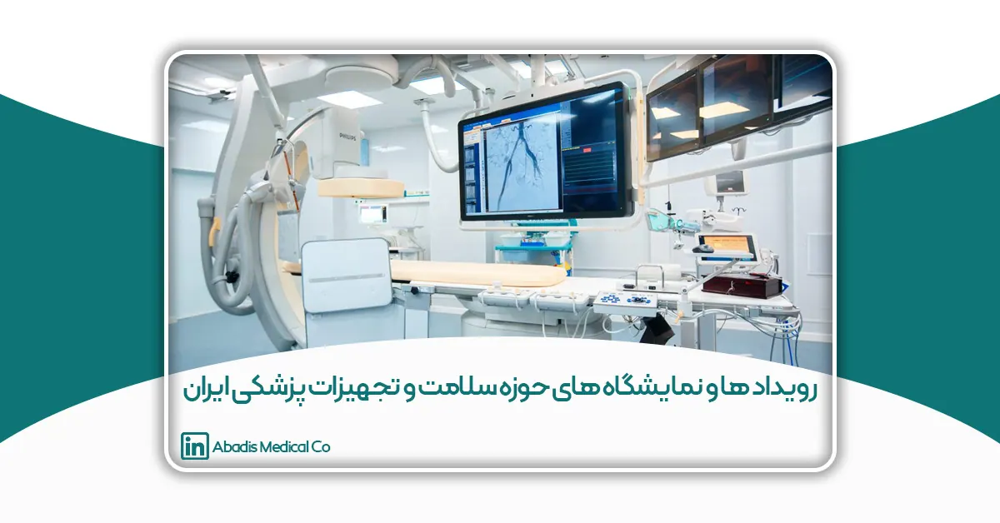
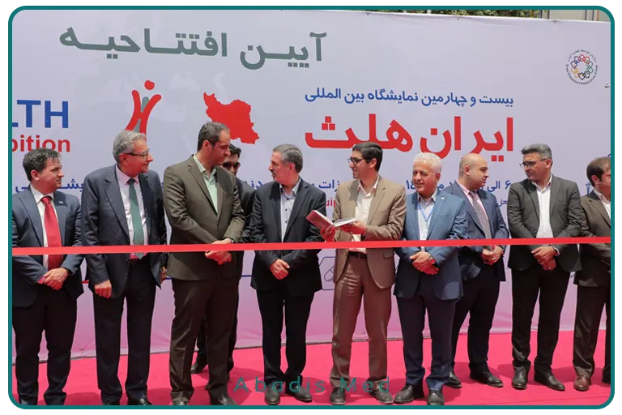
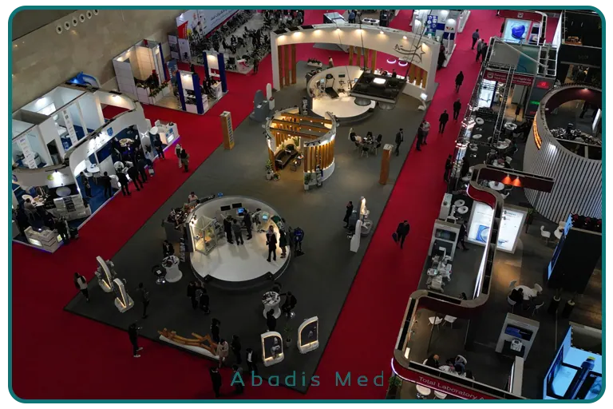

مقدمه
صنعت تجهیزات پزشکی یکی از راهبردیترین بخشهای نظام سلامت هر کشور بهشمار میرود؛ صنعتی که بهطور مستقیم با کیفیت خدمات درمانی، ایمنی بیماران و کارایی مراکز بهداشتی و درمانی در ارتباط است. در ایران، همزمان با رشد تولید داخلی، توسعه شرکتهای دانشبنیان و افزایش نیاز مراکز درمانی به تجهیزات استاندارد و بهروز، نمایشگاههای تخصصی تجهیزات پزشکی به یکی از مهمترین بسترهای تعامل میان تولیدکنندگان، تأمینکنندگان، سیاستگذاران و مصرفکنندگان نهایی تبدیل شدهاند.
نمایشگاههای تجهیزات پزشکی، فراتر از یک رویداد صرفاً تجاری، نقش مؤثری در انتقال فناوری، معرفی نوآوریها، ارزیابی رقبا، شکلگیری همکاریهای صنعتی و تسهیل تصمیمگیریهای خرید ایفا میکنند. این رویدادها امکان مواجهه مستقیم بازار با محصولات جدید، بررسی عملی کیفیت تجهیزات و ایجاد ارتباط بدون واسطه میان فعالان صنعت و مدیران حوزه سلامت را فراهم میسازند؛ امری که در هیچ ابزار بازاریابی دیگری با این سطح از اثرگذاری قابل دستیابی نیست.
در ایران، ساختار نمایشگاههای تجهیزات پزشکی بهطور کلی در دو سطح اصلی قابل بررسی است: نمایشگاههای ملی و بینالمللی که عمدتاً در تهران برگزار میشوند و نمایشگاههای منطقهای و استانی که در شهرهای مختلف کشور شکل میگیرند. نمایشگاههای تهران بهعنوان محور سیاستگذاری، برندینگ و تعاملات کلان صنعت شناخته میشوند، در حالی که نمایشگاههای استانی نقش مکمل و اجراییتری در توسعه بازار، فروش مستقیم و پاسخگویی به نیازهای بومی مراکز درمانی ایفا میکنند. بررسی همزمان این دو سطح، تصویری جامع از زیستبوم نمایشگاهی صنعت تجهیزات پزشکی ایران ارائه میدهد.
این مقاله با هدف معرفی و تحلیل نمایشگاههای مهم تجهیزات پزشکی ایران تدوین شده و تلاش دارد ضمن بررسی رویدادهای شاخص تهران، به نقش و کارکرد نمایشگاههای استانی در توسعه بازار داخلی نیز بپردازد. در ادامه، ویژگیها، مخاطبان هدف، مزایا و چالشهای هر یک از این نمایشگاهها مورد بررسی قرار گرفته و در نهایت، توصیههای کاربردی برای شرکتهای فعال در حوزه تجهیزات پزشکی بهمنظور حضور مؤثر و هدفمند در این رویدادها ارائه خواهد شد.
نمایشگاههای تجهیزات پزشکی در تهران
نمایشگاه بینالمللی ایران هلث
(Iran Health)
نمایشگاه بینالمللی ایران هلث مهمترین رویداد تخصصی حوزه سلامت در ایران است که بهصورت سالانه در محل دائمی نمایشگاههای بینالمللی تهران برگزار میشود. این نمایشگاه بهعنوان ویترین صنعت تجهیزات پزشکی کشور، طیف گستردهای از تجهیزات پزشکی، دندانپزشکی، آزمایشگاهی و فناوریهای مرتبط با سلامت را پوشش میدهد و نقش محوری در معرفی توانمندیهای داخلی و تعاملات صنعتی ایفا میکند.
ایران هلث محل تجمع اصلی تولیدکنندگان، واردکنندگان، شرکتهای پخش، دانشگاههای علوم پزشکی و نهادهای نظارتی است و به همین دلیل، جایگاهی فراتر از یک رویداد صرفاً تجاری دارد. بسیاری از شرکتها از این نمایشگاه برای معرفی محصولات جدید، تثبیت برند، شناسایی نمایندگان فروش و آغاز همکاریهای تجاری استفاده میکنند.
کیفیت بالای بازدیدکنندگان، شامل مدیران خرید بیمارستانها، کارشناسان تجهیزات پزشکی و تصمیمگیرندگان حوزه سلامت، ایران هلث را به بستری مؤثر برای شبکهسازی و مذاکرههای تجاری تبدیل کرده است. در عین حال، هزینه بالای حضور و رقابت شدید، حضور در این نمایشگاه را به فعالیتی نیازمند برنامهریزی و آمادگی حرفهای تبدیل میکند.
در مجموع، ایران هلث مهمترین مرجع نمایشگاهی صنعت تجهیزات پزشکی ایران محسوب میشود و حضور هدفمند در آن میتواند نقش تعیینکنندهای در جایگاه بازار و اعتبار برند شرکتهای فعال در این حوزه داشته باشد.

نمایشگاه تجهیزات پزشکی ایران مد (Iran Med)
نمایشگاه Iran Med یکی از رویدادهای تخصصی حوزه تجهیزات پزشکی در تهران است که با رویکردی تجاریتر و عملیاتیتر نسبت به ایران هلث برگزار میشود. این نمایشگاه تمرکز اصلی خود را بر معرفی تجهیزات پزشکی، ملزومات مصرفی، تجهیزات آزمایشگاهی و خدمات مرتبط با بازار داخلی قرار داده و بستری مناسب برای ارتباط مستقیم میان تولیدکنندگان، توزیعکنندگان و خریداران فراهم میکند.
ایران مد به دلیل فضای هدفمندتر و مقیاس جمعوجورتر، امکان مذاکره مؤثرتر و تعامل نزدیکتر با بازدیدکنندگان تخصصی را فراهم میسازد. بازدیدکنندگان این نمایشگاه عمدتاً شامل شرکتهای پخش، مدیران خرید مراکز درمانی، فعالان بازار تجهیزات پزشکی و نمایندگان فروش هستند و تمرکز آن بیشتر بر فروش، توسعه شبکه توزیع و قراردادهای تأمین است.
در مقایسه با نمایشگاه ایران هلث، هزینه حضور در ایران مد معمولاً کمتر بوده و رقابت میان غرفهداران مدیریتپذیرتر است؛ به همین دلیل این نمایشگاه گزینهای مناسب برای شرکتهای کوچک و متوسط، تولیدکنندگان داخلی و برندهایی است که بهدنبال تقویت حضور خود در بازار داخلی هستند.
در مجموع، نمایشگاه ایران مد مکمل نمایشگاه ایران هلث محسوب میشود و با تمرکز بر جنبههای اجرایی و تجاری، نقش مهمی در پویایی بازار تجهیزات پزشکی ایران ایفا میکند.

نمایشگاههای تخصصی جانبی حوزه سلامت در تهران
علاوه بر Iran Health و Iran Med، در تهران نمایشگاهها یا رویدادهای تخصصیتری هم برگزار میشود که گاهی بهصورت مستقل یا در قالب سالنهای تخصصی هستند:
نمایشگاههای مرتبط با:
-
تجهیزات بیمارستانی و زیرساخت (Hospital Equipment)
-
تجهیزات اتاق عمل و ICU
-
تجهیزات استریلیزاسیون
-
تجهیزات مصرفی پزشکی (Disposables)
-
فناوریهای سلامت دیجیتال (Health Tech)
این رویدادها معمولاً:
-
تخصصیتر
-
با مخاطب حرفهایتر
-
مناسب مذاکرات فنی و قراردادی
هستند.
بازدیدکنندگان اصلی نمایشگاههای تهران
یکی از دلایل اهمیت نمایشگاههای تهران، کیفیت بازدیدکنندگان است:
-
مدیران خرید بیمارستانها
-
مسئولین تدارکات دانشگاههای علوم پزشکی
-
پزشکان متخصص و رؤسای بخشها
-
شرکتهای پخش تجهیزات پزشکی
-
سرمایهگذاران حوزه سلامت
-
نهادهای نظارتی و ارزیابها
مزایای شرکت در نمایشگاههای تجهیزات پزشکی تهران
- افزایش اعتبار برند
- دسترسی مستقیم به تصمیمگیرندهها
- بررسی رقبا در سطح ملی
- دریافت بازخورد واقعی بازار
- ایجاد همکاریهای تولیدی یا توزیعی
- معرفی محصولات جدید به بازار رسمی
چالشها و نکات مهم حضور در تهران
-
رقابت بسیار بالا
-
غرفهسازی و طراحی حرفهای ضروری است
-
داشتن مستندات فنی، مجوزها و ISO بسیار مهم است
-
تیم غرفه باید آموزشدیده و فنی باشد
-
پیگیری بعد از نمایشگاه حیاتی است
توصیه عملی برای شرکتهای تجهیزات پزشکی
اگر تازهکار هستید:
-
ابتدا Iran Med
اگر برند تثبیتشده هستید: -
حضور قطعی در Iran Health
اگر محصول مصرفی (مثل ساکشن تیوب) دارید: -
تمرکز روی دمو، بستهبندی، قیمت و شبکه توزیع
در کنار نمایشگاههای بزرگ تهران، نمایشگاههای استانی تجهیزات پزشکی نقش بسیار مهمی در توسعه بازارهای منطقهای، دسترسی به مراکز درمانی محلی و تقویت شبکه توزیع ایفا میکنند. این نمایشگاهها معمولاً با تمرکز بر نیازهای بومی هر منطقه برگزار میشوند و فرصتی کمهزینهتر ولی هدفمندتر برای شرکتهای تجهیزات پزشکی فراهم میکنند.
نمایشگاههای استانی، بهویژه برای تجهیزات مصرفی، نیمهمصرفی و خدمات پس از فروش اهمیت بالایی دارند.
نمایشگاه تجهیزات پزشکی مشهد (IMED / Health Expo Mashhad)
جایگاه استراتژیک:
مشهد بهعنوان قطب درمانی شرق کشور و مقصد گردشگری سلامت، با وجود بیمارستانهای بزرگ دولتی و خصوصی، مراکز درمانی پذیرای بیماران داخلی و خارجی و دانشگاه علوم پزشکی فعال، نقش مهمی در صنعت تجهیزات پزشکی ایفا میکند.
ویژگیها و تمرکز نمایشگاه:
-
پوشش استانهای شرق و شمالشرق کشور (خراسان رضوی، شمال خراسان جنوبی و خراسان شمالی).
-
تمرکز بر تجهیزات مصرفی، ICU، تجهیزات عمومی بیمارستانی، تجهیزات تشخیصی و تصویربرداری.
-
ایجاد فرصت برای عقد قراردادهای تأمین بلندمدت و خدمات پس از فروش.
-
حضور فعال مدیران بیمارستانها و رؤسای بخشهای تخصصی.
مخاطبان اصلی:
-
مدیران خرید بیمارستانها و مراکز درمانی دولتی و خصوصی.
-
شرکتهای پخش و نمایندگان فروش.
-
مراکز گردشگری سلامت و بیماران بینالمللی.
چالشها و فرصتها:
-
رقابت کمتر نسبت به تهران، اما نیاز به ارائه خدمات و پشتیبانی قوی.
-
امکان توسعه شبکه فروش منطقهای و ورود به بازارهای شرق کشور.
نمایشگاه تجهیزات پزشکی شیراز (iMED / MedExpo Shiraz)
جایگاه استراتژیک:
شیراز بهعنوان یکی از قطبهای علمی و درمانی جنوب کشور، با مراکز فوقتخصصی، دانشگاه علوم پزشکی شیراز و پذیرش بیماران از جنوب و کشورهای حاشیه خلیج فارس، اهمیت ویژهای دارد.
ویژگیها و تمرکز نمایشگاه:
-
ارائه تجهیزات تشخیصی پیشرفته، ابزارهای جراحی و اتاق عمل، تجهیزات بیمارستانی و ICU.
-
تاکید بر کیفیت و استاندارد تجهیزات و حضور برندهای معتبر داخلی و خارجی.
-
فضای تخصصی و حرفهای برای مذاکرات فنی و عقد قراردادهای تحقیق و توسعه.
مخاطبان اصلی:
-
پزشکان متخصص و رؤسای بخشها.
-
مدیران خرید و تدارکات مراکز درمانی خصوصی و دولتی.
-
فعالان بازار تجهیزات پزشکی جنوب کشور.
چالشها و فرصتها:
-
فرصت توسعه بازار برای تجهیزات پیشرفته و تخصصی.
-
نیاز به ارائه خدمات پس از فروش و آموزش کاربران برای تجهیزات پیچیده.
نمایشگاه تجهیزات پزشکی اصفهان (Isfahan Health / Med Expo Isfahan)
جایگاه استراتژیک:
اصفهان بهعنوان قطب صنعتی و درمانی مرکز کشور، دارای تعداد زیادی بیمارستان دولتی و خصوصی، مراکز تخصصی و شرکتهای صنعتی فعال در حوزه پزشکی است.
ویژگیها و تمرکز نمایشگاه:
-
تمرکز بر تولید داخل، تجهیزات مهندسی پزشکی و ابزارهای تخصصی بیمارستانی.
-
ایجاد فرصت همکاری میان صنعت و دانشگاه.
-
بازار مناسب برای عقد قراردادهای تأمین بلندمدت و تجهیزات تخصصی.
مخاطبان اصلی:
-
شرکتهای صنعتی و تولیدکنندگان تجهیزات پزشکی.
-
مدیران خرید بیمارستانها و مراکز درمانی.
-
پژوهشگران و فعالان دانشگاهی حوزه سلامت.
چالشها و فرصتها:
-
فرصت ورود به بازار صنعتی و ایجاد زنجیره تأمین داخلی.
-
نیاز به هماهنگی با استانداردهای ملی و گواهینامههای کیفیت.
نمایشگاه تجهیزات پزشکی تبریز (Tabriz Med / Health Expo Tabriz)
جایگاه استراتژیک:
تبریز، قطب درمانی شمالغرب کشور، با دسترسی به استانهای آذربایجان شرقی و غربی، اردبیل و زنجان، نقش مهمی در پوشش بازار شمالغرب و صادرات به کشورهای همسایه مانند ترکیه و جمهوری آذربایجان دارد.
ویژگیها و تمرکز نمایشگاه:
-
ارائه تجهیزات عمومی بیمارستانی، مصرفی، تشخیصی و دارویی.
-
فرصت توسعه بازار منطقهای و صادراتی به کشورهای همسایه.
-
تمرکز بر تجهیزات با قابلیت استفاده آسان و نگهداری کمهزینه.
مخاطبان اصلی:
-
شرکتهای دارای شبکه توزیع.
-
مراکز درمانی خصوصی و دولتی منطقه شمالغرب.
-
فعالان بازار صادرات منطقهای.
چالشها و فرصتها:
-
فرصت ورود به بازار بینالمللی منطقهای.
-
نیاز به تحلیل نیازهای محلی و تطبیق محصول با استانداردهای بینالمللی.
نمایشگاههای دیگر استانی و رویکرد منطقهای
برخی استانهای دیگر مانند کرمان، یزد، اهواز و رشت نیز نمایشگاههای کوچکتر ولی هدفمند برگزار میکنند. ویژگی اصلی این نمایشگاهها عبارت است از:
-
تمرکز بر تجهیزات مصرفی و نیمهمصرفی.
-
هزینه حضور کمتر برای شرکتها.
-
تعامل مستقیم با مراکز درمانی محلی و پزشکان.
-
فرصت جذب مشتریان محلی و ایجاد شبکه توزیع منطقهای.
کنگرهها و نمایشگاههای تخصصی تجهیزات پزشکی و سلامت در تهران
در کنار نمایشگاههای تجهیزات پزشکی مانند Iran Health و Iran Med، تهران میزبان مجموعهای از کنگرهها، همایشها و رویدادهای ترکیبی (کنگره–نمایشگاه) در حوزه سلامت است که نقش مهمی در توسعه علمی، تصمیمسازی بالینی و جهتدهی بازار تجهیزات پزشکی ایفا میکنند. این رویدادها معمولاً با محوریت دانش پزشکی، فناوریهای نوین درمانی و آموزش تخصصی برگزار میشوند و نمایشگاه جانبی آنها بهعنوان مکمل علمی عمل میکند.
برخلاف نمایشگاههای صرفاً تجاری، در کنگرهها مخاطب اصلی پزشکان، اساتید دانشگاه، رؤسای بخشها و تصمیمگیرندگان بالینی هستند و همین موضوع، آنها را به بستری راهبردی برای معرفی تجهیزات تخصصی و پیشرفته تبدیل میکند.
۱. کنگرههای پزشکی همراه با نمایشگاه تجهیزات (Congress & Expo)
بسیاری از کنگرههای معتبر پزشکی کشور دارای بخش نمایشگاهی فعال هستند که در آن، شرکتهای تجهیزات پزشکی محصولات مرتبط با همان تخصص را ارائه میکنند.
نمونه کنگرههای شاخص:
-
کنگرههای تخصصی قلب و عروق
-
کنگرههای ارتوپدی و جراحی استخوان
-
کنگرههای بیهوشی و مراقبتهای ویژه (ICU)
-
کنگرههای تصویربرداری پزشکی و رادیولوژی
-
کنگرههای تجهیزات و فناوریهای آزمایشگاهی
ویژگیهای نمایشگاهی این کنگرهها:
-
تمرکز بسیار تخصصی بر یک حوزه مشخص
-
مخاطبان کاملاً حرفهای و تصمیمگیر
-
مناسب برای تجهیزات سرمایهای و پیشرفته
-
امکان ارائه دموهای علمی و کارگاههای آموزشی
این رویدادها برای شرکتهایی که تجهیزات تخصصی، هایتک یا وابسته به تصمیم پزشک دارند، ارزش استراتژیک بسیار بالایی دارند.
۲. نمایشگاهها و کنگرههای بیمارستانی و مدیریت سلامت
در تهران، برخی رویدادها با محور مدیریت بیمارستانی، مهندسی پزشکی و سیاستگذاری سلامت برگزار میشوند که نمایشگاههای جانبی آنها نقش مهمی در معرفی راهکارهای جامع دارند.
محورهای اصلی این رویدادها:
-
تجهیزات زیرساخت بیمارستانی
-
سیستمهای استریلیزاسیون
-
تجهیزات اتاق عمل و ICU
-
فناوریهای مدیریت بیمارستان (HIS، Health Tech)
-
خدمات مهندسی پزشکی و نگهداشت تجهیزات
مخاطبان اصلی:
-
مدیران بیمارستانها
-
مسئولین مهندسی پزشکی
-
مدیران خرید و تدارکات
-
تصمیمگیرندگان سازمانی
این رویدادها بیشتر از آنکه فروش لحظهای ایجاد کنند، به تصمیمسازیهای کلان و قراردادهای بلندمدت منجر میشوند.
۳. نمایشگاهها و رویدادهای فناوری سلامت (Health Tech & Digital Health)
در سالهای اخیر، تهران شاهد رشد رویدادهای تخصصی در حوزه سلامت دیجیتال، تجهیزات هوشمند و فناوریهای نوین پزشکی بوده است. این رویدادها گاهی بهصورت نمایشگاه مستقل و گاهی در قالب بخش ویژه ایران هلث یا کنگرههای فناوری برگزار میشوند.
محورهای اصلی:
-
تجهیزات پزشکی هوشمند
-
هوش مصنوعی در پزشکی
-
تلهمدیسین و پایش از راه دور
-
نرمافزارهای پزشکی و سلامت دیجیتال
این رویدادها بستر مناسبی برای شرکتهای دانشبنیان، استارتاپها و تیمهای فناور فراهم میکنند و نقش مهمی در آینده صنعت تجهیزات پزشکی دارند.
جمعبندی کلی
نمایشگاههای تجهیزات پزشکی در ایران بهعنوان یکی از مهمترین ابزارهای توسعه بازار و تعاملات حرفهای صنعت سلامت شناخته میشوند. این رویدادها بستری مؤثر برای معرفی محصولات، تبادل دانش فنی، ایجاد ارتباط میان تولیدکنندگان و مصرفکنندگان و شکلگیری همکاریهای تجاری فراهم میکنند. نمایشگاههای ملی تهران، بهویژه ایران هلث و ایران مد، نقش محوری در برندینگ، سیاستگذاری و معرفی توانمندیهای صنعت دارند، در حالی که نمایشگاههای استانی با رویکرد اجراییتر، سهم قابلتوجهی در فروش مستقیم و توسعه بازارهای منطقهای ایفا میکنند.
حضور موفق در نمایشگاههای تجهیزات پزشکی نیازمند انتخاب آگاهانه رویدادها، آمادگی فنی و تجاری و برنامهریزی هدفمند است. شرکتهایی که نمایشگاه را بهعنوان بخشی از استراتژی کلان بازاریابی و توسعه خود در نظر میگیرند، میتوانند از این فرصتها برای تقویت جایگاه رقابتی، افزایش سهم بازار و توسعه پایدار در صنعت تجهیزات پزشکی کشور بهرهبرداری کنند.